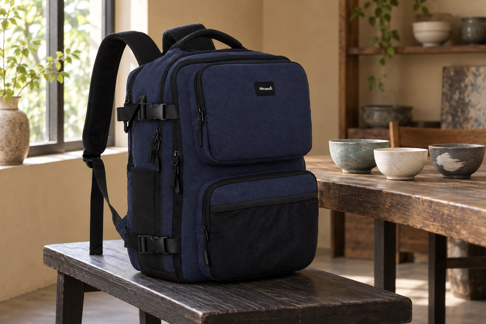
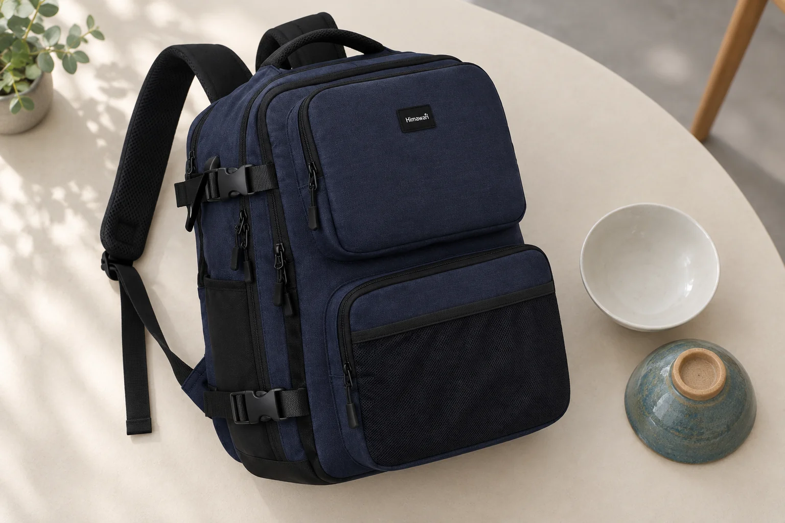
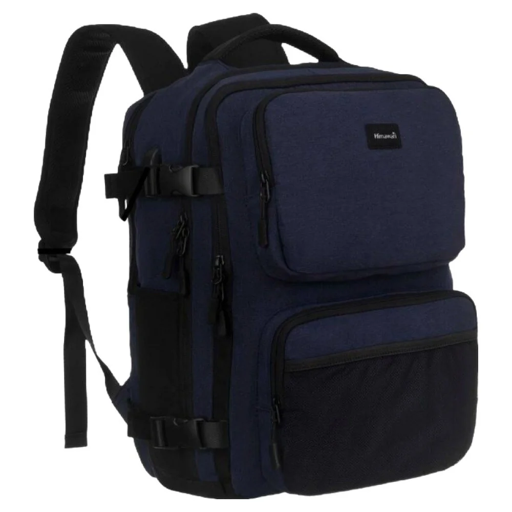

앞 포켓이 도드라진 네모 백팩, 두께와 개폐를 함께 읽기

네모난 백팩을 화면에서 보면 서류나 책의 모양부터 떠올리기 쉽습니다. 그러나 가방 앞면의 사각형과 물건이 들어가는 내부 공간은 서로 다른 정보입니다. No.2301 네이비의 실제 제품 사진에서는 몸판 앞쪽에 위아래로 나뉜 포켓 모양과 각각의 지퍼가 보입니다. 몸판의 바깥 윤곽만 따라가면 놓치기 쉬운 돌출 부분입니다. 이 가방을 고를 때에는 정면의 반듯한 모양, 옆으로 나온 두께, 손으로 지퍼를 움직일 방향을 연결해서 살펴볼 수 있습니다.
앞 포켓의 윤곽과 몸판의 윤곽을 따로 따라가기
사진 속 위쪽 앞 포켓은 네모난 면을 넓게 차지하고, 아래쪽에는 별도의 앞 포켓이 놓여 있습니다. 바깥에서 보이는 선을 하나씩 따라가면 어느 부분이 몸판이고 어느 부분이 덧붙은 공간인지 구별하기 쉬워집니다. 이 모양을 보고 포켓 안에 특정 두께의 파우치가 들어간다고 말할 수는 없습니다. 실제 내부 치수와 입구의 열림 범위는 겉에서 보이는 면적과 다를 수 있기 때문입니다.
평소 앞 포켓에 물건을 넣지 않는 사람도 이 구조를 볼 필요는 있습니다. 비어 있을 때의 사진에서 마음에 든 윤곽이 물건을 넣은 뒤에도 자신에게 괜찮은지 확인해야 합니다. 반대로 자주 꺼내는 소품을 따로 두고 싶다면, 앞 포켓이 있다는 사실에 더해 손이 들어가는 방향을 보게 됩니다. 포켓 개수가 많다는 이유만으로 편하다고 평가하기 전에, 자신이 실제로 맡길 물건 하나를 정해 질문을 만드는 편이 낫습니다.

정면에서는 보이지 않는 폭
이 모델의 제조사 카탈로그 외부 크기는 가로 28cm, 세로 42cm, 폭 17cm입니다. 외부 폭 17cm를 모든 내부 칸의 깊이로 읽지 않습니다. 실제 제품 사진을 옆에서 비스듬히 보면 앞 포켓과 몸판이 겹치는 모습을 볼 수 있지만, 그 사진에도 각 공간의 수납 치수가 적혀 있지는 않습니다. 노트북이나 두꺼운 책을 넣을 목적이라면 어느 칸에 넣는지와 그 칸의 유효한 크기를 별도로 물어보아야 합니다.
비교할 다른 가방을 이미 쓰고 있다면, 몸판 옆면을 같은 방향으로 놓아보세요. 두 가방의 정면 폭이 비슷해도 앞 포켓을 포함한 옆모습은 다르게 보일 수 있습니다. 책상 옆이나 의자 가까이에 가방을 놓는 습관이 있다면 이 차이가 놓을 자리를 고를 때의 질문으로 이어집니다. 특정 공간에 들어간다는 결론은 실제 가방과 그 공간을 대조한 뒤에 내릴 수 있습니다. 외부 숫자는 그 비교를 시작할 기준으로 사용합니다.
지퍼가 보이는 위치에서 열고 닫는 동작으로
가방을 열 때에는 지퍼가 있다는 사실보다 손이 어느 방향으로 움직이는지가 더 구체적인 정보가 됩니다. 제품 사진에서 주 수납부와 앞 포켓의 지퍼 선을 따로 찾아보세요. 가방을 몸 앞에 놓았을 때 위쪽에서 손을 움직이는 동작과 아래 포켓을 여는 동작을 각각 떠올릴 수 있습니다. 손잡이를 잡고 서 있는 상황과 책상 위에 내려놓은 상황에서는 가방을 받치는 방식도 달라질 수 있습니다.
이때 '한 손으로 쉽게 열린다'거나 '내용물이 바로 보인다'고 사진만으로 평가하지 않습니다. 지퍼의 실제 움직임, 안쪽 안감이 닿는 정도, 내용물의 배치는 실물에서 확인할 부분입니다. 구매 전에 질문한다면 '앞 포켓이 편한가요?'보다 '주로 넣을 케이스가 이 크기인데 앞 포켓 입구를 통과할 수 있나요?'처럼 묻는 편이 구체적입니다. 자신의 물건 외형과 사용하려는 칸을 함께 전달해야 답의 범위도 분명해집니다.

측면의 버클은 사진으로 역할을 정하지 않기
실제 원본의 측면에는 위아래로 버클이 보입니다. 지퍼를 어디까지 열 수 있는지 살펴보는 사람이라면 이 부품이 여닫는 경로와 어떤 관계인지 궁금할 수 있습니다. 다만 사진에 부품이 있다는 이유로 짐을 압축한다거나 어떤 물건을 외부에 고정할 수 있다고 단정하지 않습니다. 연결 방식과 사용 목적은 해당 모델의 안내에서 확인해야 합니다. 원하는 사용이 있다면 부품 사진을 짚어 제품 문의로 이어갈 수 있습니다.
옆면의 디테일이 많아 보이는 가방을 좋아하는 경우와 매끈한 외곽선을 선호하는 경우도 나누어볼 만합니다. 실용 기능이 궁금해서 보는 부품과 외관 취향 때문에 눈에 들어오는 부품을 같은 이유로 평가할 필요는 없습니다. No.2301의 네모난 몸판이 마음에 들어도 지퍼와 버클이 함께 드러나는 모습이 자신의 옷차림과 맞는지는 별도로 볼 수 있습니다. 제품 하나에서도 형태에 대한 판단과 사용에 대한 판단은 다른 속도로 정리될 수 있습니다.
사진을 보고 남길 수 있는 질문
처음에는 '수납이 잘될 것 같다'고 생각했다면, 사진을 본 뒤에는 무엇을 확인해야 그 생각을 판단할 수 있는지 적어보세요. 주로 넣는 파일은 주 수납부의 입구를 확인하고, 자주 꺼낼 케이스는 앞 포켓의 내부 치수와 열림 방향을 확인하는 식입니다. 앞 포켓이 도드라진 디자인 자체가 마음에 든 경우라면 물건을 넣었을 때의 옆모습을 볼 수 있는지도 물어볼 수 있습니다. 질문의 대상이 구체적일수록 사진의 인상과 구매 조건을 연결하기 쉬워집니다.
이 글의 AI 사진은 네이비 백팩의 앞면을 서로 다른 방향에서 보도록 구성한 연출입니다. 함께 놓인 그릇은 배경 소품이며 가방의 색이나 구조를 증명하는 자료가 아닙니다. 구조를 확인할 때에는 함께 실은 실제 제품 사진과 제품 페이지의 정보를 기준으로 보세요. 네모난 외형이 마음에 들었다면, 앞 포켓을 포함한 전체 두께와 실제로 사용할 입구까지 확인한 뒤 자신의 가방 후보로 남길 수 있습니다.